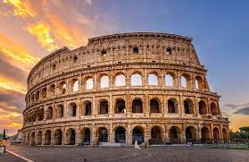
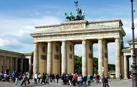
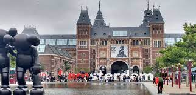

Alguns lugares turísticos na Europa
O Velho Continente é repleto de cenários paradisíacos, gastronomia de primeira e cidades históricas. Abaixo alguns desses lugares
1. Coliseu em Roma, Itália
As lutas de gladiadores e simulações de caça com animais ferozes estão no
imaginário de todos os que estudaram ou simplesmente assistiram filmes sobre o Império Romano.

O Coliseu, cujo nome oficial é Anfiteatro Flaviano, começou a ser construído em 72 d.C e
demorou oito anos para ficar pronto.
2. Inglaterra: Torre Big Ben de Londres
Outro ponto turístico famoso e um dos símbolos da Europa é o Big Ben de Londres.
É no Big Ben que está instalado o parlamento inglês

É possível fazer uma visita às seções do Parlamento gratuitamente,
mas você tem de ir diretamente ao Big Ben e ver se haverá plenária no dia.
3. Alemanha: Portão de Brandemburgo em Berlim
É um dos monumentos mais importantes da Alemanha e mais simbólicos da história do século XX
e da Europa. É o símbolo da separação das duas Alemanhas, que eram divididas pelo Muro de Berlim.

Como fica no centro, você pode aproveitar e já visitar outros pontos turísticos como o Potsdamer Platz,
Catedral de Berlim e o Berliner Fernsehturm, que estão todos nessa região.
4. Holanda: Museumplein em Amsterdã
É lá que estão os museus mais famosos de Amsterdã e da Holanda, que são o Museu Rijksmuseum,
o Museu Van Goghe e o Museu Stedelijk. Se for priorizar, não deixe de ir no Museu Van Goghe,
que é o maior acervo de obras do artista no mundo.
